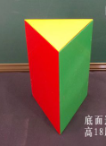

<!DOCTYPE html>
<html lang="en">
<head>
<meta charset="UTF-8" />
<meta name="viewport" content="width=device-width, initial-scale=1.0" />
<title>mc_1804 solid geometry viewer</title>
<!-- 生成: kimi-k2.6 thinking API JSON spec + local Three.js renderer · perception-eval-700 -->
<style>
  html, body {
    margin: 0;
    height: 100%;
    overflow: hidden;
    background: #f6f7f8;
    color: #202326;
    font-family: "PingFang SC", "Microsoft YaHei", "Hiragino Sans GB", "Noto Sans CJK SC", Arial, sans-serif;
  }
  #stage { position: fixed; inset: 0; width: 100vw; height: 100vh; }
  .source {
    position: fixed; top: 12px; left: 12px; z-index: 10;
    width: 210px; max-width: calc(100vw - 24px);
    background: rgba(255,255,255,0.94);
    border: 1px solid #d7dade; border-radius: 6px; padding: 8px;
    box-shadow: 0 2px 8px rgba(0,0,0,0.06);
  }
  .source h1 {
    margin: 0 0 6px 0; font-size: 11px; font-weight: 700;
    color: #5a6169; letter-spacing: 0;
  }
  .source img {
    display: block; max-width: 194px; max-height: 184px; object-fit: contain;
    background: #fbfbfb; border: 1px solid #eef0f2;
  }
  .meta {
    margin-top: 6px; font-size: 11px; line-height: 1.35; color: #5d6570;
    overflow-wrap: anywhere;
  }
  .label {
    color: #111; font-size: 20px; font-weight: 900; line-height: 1;
    text-shadow: 0 0 5px #fff, 0 0 5px #fff, 0 0 5px #fff, 0 1px 0 #fff;
    pointer-events: none; white-space: nowrap;
  }
  .label.aux { color: #a14900; }
  .label.center { color: #b42318; }
  @media (max-width: 520px) {
    .source { width: 164px; }
    .source img { max-width: 148px; max-height: 136px; }
    .meta { font-size: 10px; }
    .label { font-size: 17px; }
  }
</style>
</head>
<body>
<section id="stage"></section>
<aside class="source">
  <h1>mc_1804</h1>
  
</aside>

<script type="importmap">
{
  "imports": {
    "three": "https://unpkg.com/three@0.160.0/build/three.module.js",
    "three/addons/": "https://unpkg.com/three@0.160.0/examples/jsm/"
  }
}
</script>
<script type="module">
import * as THREE from 'three';
import { OrbitControls } from 'three/addons/controls/OrbitControls.js';
import { CSS2DRenderer, CSS2DObject } from 'three/addons/renderers/CSS2DRenderer.js';
import { LineSegments2 } from 'three/addons/lines/LineSegments2.js';
import { LineSegmentsGeometry } from 'three/addons/lines/LineSegmentsGeometry.js';
import { LineMaterial } from 'three/addons/lines/LineMaterial.js';

const SPEC = {"title": "三棱柱 · augmented", "meta": "rule-based auxiliary construction: center/section/diagonal/axis overlays", "camera": {"position": [3.0, 2.5, 4.0], "target": [0.0, 0.9, 0.0], "orthoSize": 3.2}, "vertices": {"A": [0.0, 0.0, 1.0], "B": [-0.866, 0.0, -0.5], "C": [0.866, 0.0, -0.5], "D": [0.0, 1.8, 1.0], "E": [-0.866, 1.8, -0.5], "F": [0.866, 1.8, -0.5], "O": [0.0, 0.9, 0.25], "M": [0.433, 0.9, 0.25], "N": [-0.433, 0.0, 0.25], "P": [0.0, 1.8, -0.5], "S1": [-0.866, 0.9, -0.5], "S2": [0.866, 0.9, -0.5], "S3": [0.866, 0.9, 1.0], "S4": [-0.866, 0.9, 1.0]}, "faces": [{"points": ["D", "E", "F"], "color": "#f1c40f", "opacity": 0.95}, {"points": ["A", "B", "E", "D"], "color": "#e74c3c", "opacity": 0.95}, {"points": ["A", "D", "F", "C"], "color": "#27ae60", "opacity": 0.95}, {"points": ["B", "C", "F", "E"], "color": "#95a5a6", "opacity": 0.95}, {"points": ["A", "C", "B"], "color": "#cccccc", "opacity": 0.2}], "edges": [{"points": ["A", "B"], "color": "#111111", "width": 2.6}, {"points": ["B", "C"], "color": "#111111", "width": 2.6}, {"points": ["C", "A"], "color": "#111111", "width": 2.6}, {"points": ["D", "E"], "color": "#111111", "width": 2.6}, {"points": ["E", "F"], "color": "#111111", "width": 2.6}, {"points": ["F", "D"], "color": "#111111", "width": 2.6}, {"points": ["A", "D"], "color": "#111111", "width": 2.6}, {"points": ["B", "E"], "color": "#111111", "width": 2.6}, {"points": ["C", "F"], "color": "#111111", "width": 2.6}], "aux_lines": [{"points": ["C", "D"], "color": "#d03030", "dash": true, "depthTest": false, "width": 4.2}, {"points": ["O", "M"], "color": "#d97400", "dash": true, "depthTest": false, "width": 3.8}, {"points": ["N", "P"], "color": "#d97400", "dash": true, "depthTest": false, "width": 3.8}, {"points": ["S1", "S2"], "color": "#b7791f", "dash": true, "depthTest": false, "width": 3.4}, {"points": ["S2", "S3"], "color": "#b7791f", "dash": true, "depthTest": false, "width": 3.4}, {"points": ["S3", "S4"], "color": "#b7791f", "dash": true, "depthTest": false, "width": 3.4}, {"points": ["S4", "S1"], "color": "#b7791f", "dash": true, "depthTest": false, "width": 3.4}], "aux_faces": [{"points": ["S1", "S2", "S3", "S4"], "color": "#f2c94c", "opacity": 0.26}], "labels": [{"text": "O", "point": "O", "offset": [0.08, 0.08, 0.08], "kind": "aux"}, {"text": "M", "point": "M", "offset": [0.08, 0.08, 0.08], "kind": "aux"}, {"text": "N", "point": "N", "offset": [0.08, 0.08, 0.08], "kind": "aux"}, {"text": "P", "point": "P", "offset": [0.08, 0.08, 0.08], "kind": "aux"}], "primitives": [], "_id": "mc_1804", "_model": "kimi-k2.6", "_augmentation": "rule_v1", "_hide_meta_panel": true, "aux_points": ["O", "M", "N", "P", "S1", "S2", "S3", "S4"]};
const stage = document.getElementById('stage');
const scene = new THREE.Scene();
scene.background = new THREE.Color(0xf6f7f8);
window.__renderedFrames = 0;

const cameraCfg = SPEC.camera || {};
const aspect0 = stage.clientWidth / Math.max(stage.clientHeight, 1);
let orthoSize = Number(cameraCfg.orthoSize || cameraCfg.ortho_size || 3.2);
const camera = new THREE.OrthographicCamera(
  -orthoSize * aspect0, orthoSize * aspect0,
  orthoSize, -orthoSize,
  0.1, 1000
);
const camPos = cameraCfg.position || [3.2, 2.4, 5.2];
camera.position.set(camPos[0] || 3.2, camPos[1] || 2.4, camPos[2] || 5.2);

const renderer = new THREE.WebGLRenderer({ antialias: true });
renderer.setPixelRatio(window.devicePixelRatio);
renderer.setSize(stage.clientWidth, stage.clientHeight);
stage.appendChild(renderer.domElement);

const labelRenderer = new CSS2DRenderer();
labelRenderer.setSize(stage.clientWidth, stage.clientHeight);
labelRenderer.domElement.style.position = 'absolute';
labelRenderer.domElement.style.top = '0';
labelRenderer.domElement.style.left = '0';
labelRenderer.domElement.style.pointerEvents = 'none';
stage.appendChild(labelRenderer.domElement);

const controls = new OrbitControls(camera, renderer.domElement);
controls.enableDamping = true;
const target = cameraCfg.target || [0, 0.8, 0];
controls.target.set(target[0] || 0, target[1] || 0, target[2] || 0);

scene.add(new THREE.AmbientLight(0xffffff, 0.92));
const light = new THREE.DirectionalLight(0xffffff, 0.45);
light.position.set(5, 8, 6);
scene.add(light);

const V = {};
for (const [name, value] of Object.entries(SPEC.vertices || {})) {
  if (Array.isArray(value) && value.length >= 3) V[name] = new THREE.Vector3(value[0], value[1], value[2]);
}

const lineMaterials = [];
function colorOf(value, fallback = '#111111') {
  if (!value) return fallback;
  return value;
}

function vec(value) {
  if (value instanceof THREE.Vector3) return value.clone();
  if (typeof value === 'string') return (V[value] || new THREE.Vector3()).clone();
  if (Array.isArray(value)) return new THREE.Vector3(value[0] || 0, value[1] || 0, value[2] || 0);
  if (value && Array.isArray(value.point)) return vec(value.point);
  return new THREE.Vector3();
}

function pointsOf(values) {
  return (values || []).map(vec).filter(p => Number.isFinite(p.x) && Number.isFinite(p.y) && Number.isFinite(p.z));
}

function makeFatLine(p1, p2, color = '#111111', linewidth = 2.6, depthFunc = THREE.LessEqualDepth, depthTest = true) {
  const geometry = new LineSegmentsGeometry().setPositions([p1.x, p1.y, p1.z, p2.x, p2.y, p2.z]);
  const material = new LineMaterial({
    color, linewidth,
    resolution: new THREE.Vector2(stage.clientWidth, stage.clientHeight),
    depthTest,
    transparent: true,
    opacity: 0.96,
  });
  material.depthFunc = depthFunc;
  lineMaterials.push(material);
  const line = new LineSegments2(geometry, material);
  line.computeLineDistances();
  line.renderOrder = depthTest ? 2 : 8;
  return line;
}

function makeDashedLine(p1, p2, color = '#111111', depthTest = true, depthFunc = THREE.GreaterDepth, linewidth = 1.6, dashSize = 0.14, gapSize = 0.09, opacity = 0.88) {
  const delta = p2.clone().sub(p1);
  const length = delta.length();
  if (length <= 1e-6) return makeFatLine(p1, p2, color, linewidth, depthFunc, depthTest);
  const dir = delta.normalize();
  const positions = [];
  for (let start = 0; start < length; start += dashSize + gapSize) {
    const end = Math.min(start + dashSize, length);
    const a = p1.clone().addScaledVector(dir, start);
    const b = p1.clone().addScaledVector(dir, end);
    positions.push(a.x, a.y, a.z, b.x, b.y, b.z);
  }
  const geometry = new LineSegmentsGeometry().setPositions(positions);
  const material = new LineMaterial({
    color, linewidth,
    resolution: new THREE.Vector2(stage.clientWidth, stage.clientHeight),
    depthTest,
    transparent: true,
    opacity,
  });
  material.depthFunc = depthFunc;
  lineMaterials.push(material);
  const line = new LineSegments2(geometry, material);
  line.renderOrder = depthTest ? 3 : 9;
  return line;
}

function addHiddenAwareEdge(p1, p2, color = '#111111', width = 2.6) {
  scene.add(makeFatLine(p1, p2, color, width, THREE.LessEqualDepth, true));
  scene.add(makeDashedLine(p1, p2, color, true, THREE.GreaterDepth, Math.max(1.4, width * 0.55), 0.14, 0.09, 0.82));
}

function addSimpleLine(p1, p2, opts = {}) {
  const color = colorOf(opts.color, '#e67e22');
  const depthTest = opts.depthTest !== false;
  const width = Number(opts.width || 3.4);
  if (opts.dash || opts.dashed) scene.add(makeDashedLine(p1, p2, color, depthTest, THREE.LessEqualDepth, width, Number(opts.dashSize || 0.18), Number(opts.gapSize || 0.11), Number(opts.opacity || 0.92)));
  else scene.add(makeFatLine(p1, p2, color, width, THREE.LessEqualDepth, depthTest));
}

const occluderMat = new THREE.MeshBasicMaterial({
  colorWrite: false, depthWrite: true, side: THREE.DoubleSide,
  polygonOffset: true, polygonOffsetFactor: 1, polygonOffsetUnits: 1,
});

function addPolygon(points, color = '#4a90e2', opacity = 0.10, depthWrite = false) {
  if (points.length < 3) return;
  const positions = [];
  for (const p of points) positions.push(p.x, p.y, p.z);
  const indices = [];
  for (let i = 1; i < points.length - 1; i++) indices.push(0, i, i + 1);
  function makeMesh(material) {
    const geometry = new THREE.BufferGeometry();
    geometry.setAttribute('position', new THREE.Float32BufferAttribute(positions, 3));
    geometry.setIndex(indices);
    geometry.computeVertexNormals();
    const mesh = new THREE.Mesh(geometry, material);
    scene.add(mesh);
  }
  makeMesh(occluderMat);
  makeMesh(new THREE.MeshBasicMaterial({
    color, transparent: true, opacity, side: THREE.DoubleSide, depthWrite,
  }));
}

function addLabel(text, position) {
  const el = document.createElement('div');
  el.className = 'label';
  el.textContent = text;
  const obj = new CSS2DObject(el);
  obj.position.copy(position);
  scene.add(obj);
}

function addPointMarker(position, color = '#d97400', radius = 0.042) {
  const marker = new THREE.Mesh(
    new THREE.SphereGeometry(radius, 18, 12),
    new THREE.MeshBasicMaterial({ color, depthTest: false, depthWrite: false })
  );
  marker.position.copy(position);
  marker.renderOrder = 10;
  scene.add(marker);
}

function orientAxis(object, axis) {
  if (axis === 'x') object.rotation.z = Math.PI / 2;
  if (axis === 'z') object.rotation.x = Math.PI / 2;
}

function circlePoints(center, radius, axis = 'y', segments = 96) {
  const pts = [];
  for (let i = 0; i <= segments; i++) {
    const t = Math.PI * 2 * i / segments;
    if (axis === 'x') pts.push(new THREE.Vector3(center.x, center.y + radius * Math.cos(t), center.z + radius * Math.sin(t)));
    else if (axis === 'z') pts.push(new THREE.Vector3(center.x + radius * Math.cos(t), center.y + radius * Math.sin(t), center.z));
    else pts.push(new THREE.Vector3(center.x + radius * Math.cos(t), center.y, center.z + radius * Math.sin(t)));
  }
  return pts;
}

function addPolyline(points, opts = {}) {
  for (let i = 0; i < points.length - 1; i++) addSimpleLine(points[i], points[i + 1], opts);
}

function addCircle(center, radius, axis, opts = {}) {
  addPolyline(circlePoints(center, radius, axis, Number(opts.segments || 96)), opts);
}

function meshPair(geometry, center, axis, color, opacity) {
  const hidden = new THREE.Mesh(geometry.clone(), occluderMat);
  hidden.position.copy(center);
  orientAxis(hidden, axis);
  scene.add(hidden);
  const visible = new THREE.Mesh(geometry, new THREE.MeshBasicMaterial({
    color, transparent: true, opacity, side: THREE.DoubleSide, depthWrite: false,
  }));
  visible.position.copy(center);
  orientAxis(visible, axis);
  scene.add(visible);
  return visible;
}

function addBoxPrimitive(item) {
  const c = vec(item.center || [0, 0, 0]);
  const s = item.size || [1, 1, 1];
  const x = s[0] / 2, y = s[1] / 2, z = s[2] / 2;
  const names = ['p000','p100','p110','p010','p001','p101','p111','p011'];
  const pts = [
    [-x,-y,-z],[x,-y,-z],[x,y,-z],[-x,y,-z],
    [-x,-y,z],[x,-y,z],[x,y,z],[-x,y,z],
  ].map(p => new THREE.Vector3(c.x + p[0], c.y + p[1], c.z + p[2]));
  const faces = [[0,1,2,3],[4,5,6,7],[0,1,5,4],[1,2,6,5],[2,3,7,6],[3,0,4,7]];
  faces.forEach(f => addPolygon(f.map(i => pts[i]), item.color || '#4a90e2', Number(item.opacity ?? 0.10)));
  [[0,1],[1,2],[2,3],[3,0],[4,5],[5,6],[6,7],[7,4],[0,4],[1,5],[2,6],[3,7]]
    .forEach(([a,b]) => addHiddenAwareEdge(pts[a], pts[b], item.edgeColor || '#111111', Number(item.width || 2.6)));
}

function addPrimitive(item) {
  const type = String(item.type || '').toLowerCase();
  const center = vec(item.center || [0, 0, 0]);
  const color = item.color || '#4a90e2';
  const opacity = Number(item.opacity ?? 0.10);
  const axis = item.axis || 'y';
  if (type === 'box' || type === 'cuboid') return addBoxPrimitive(item);
  if (type === 'sphere') {
    const radius = Number(item.radius || 1);
    meshPair(new THREE.SphereGeometry(radius, 48, 24), center, 'y', color, opacity);
    addCircle(center, radius, 'x', { color: '#d94b4b', dash: true, depthTest: false });
    addCircle(center, radius, 'y', { color: '#d94b4b', dash: true, depthTest: false });
    addCircle(center, radius, 'z', { color: '#d94b4b', dash: true, depthTest: false });
  } else if (type === 'cylinder') {
    const radius = Number(item.radius || 1);
    const height = Number(item.height || 2);
    meshPair(new THREE.CylinderGeometry(radius, radius, height, 64, 1, false), center, axis, color, opacity);
    const d = height / 2;
    const c1 = center.clone(), c2 = center.clone();
    if (axis === 'x') { c1.x -= d; c2.x += d; }
    else if (axis === 'z') { c1.z -= d; c2.z += d; }
    else { c1.y -= d; c2.y += d; }
    addCircle(c1, radius, axis, { color: '#111111', depthTest: true });
    addCircle(c2, radius, axis, { color: '#111111', depthTest: true });
  } else if (type === 'cone') {
    const radius = Number(item.radius || 1);
    const height = Number(item.height || 2);
    meshPair(new THREE.ConeGeometry(radius, height, 64, 1, false), center, axis, color, opacity);
    const base = center.clone(), apex = center.clone();
    if (axis === 'x') { base.x -= height / 2; apex.x += height / 2; }
    else if (axis === 'z') { base.z -= height / 2; apex.z += height / 2; }
    else { base.y -= height / 2; apex.y += height / 2; }
    addCircle(base, radius, axis, { color: '#111111', depthTest: true });
    const sidePts = circlePoints(base, radius, axis, 4).slice(0, 4);
    sidePts.forEach(p => addHiddenAwareEdge(apex, p, '#111111', 2.4));
  }
}

(SPEC.primitives || []).forEach(addPrimitive);
(SPEC.faces || []).forEach(face => addPolygon(
  pointsOf(face.points || face.vertices),
  face.color || '#4a90e2',
  Number(face.opacity ?? 0.10),
  false
));

(SPEC.edges || []).forEach(edge => {
  const obj = Array.isArray(edge) ? { points: edge } : edge;
  const pts = pointsOf(obj.points);
  if (pts.length < 2) return;
  if (obj.hiddenLine === false || obj.hidden_line === false || obj.dash || obj.dashed) addSimpleLine(pts[0], pts[1], obj);
  else addHiddenAwareEdge(pts[0], pts[1], obj.color || '#111111', Number(obj.width || 2.6));
});

(SPEC.aux_faces || SPEC.auxFaces || []).forEach(face => addPolygon(
  pointsOf(face.points || face.vertices),
  face.color || '#f2c94c',
  Number(face.opacity ?? 0.18),
  false
));
(SPEC.aux_lines || SPEC.auxLines || []).forEach(line => {
  const pts = pointsOf(line.points);
  if (pts.length >= 2) addSimpleLine(pts[0], pts[1], { color: line.color || '#e67e22', dash: line.dash !== false, depthTest: line.depthTest === true ? true : false, width: line.width || 3.8, opacity: line.opacity || 0.94 });
});

const auxPointNames = SPEC.aux_points || SPEC.auxPoints || [];
auxPointNames.forEach(name => {
  if (V[name]) addPointMarker(V[name], name === 'O' ? '#b42318' : '#d97400', name === 'O' ? 0.05 : 0.043);
});

const explicitLabels = SPEC.labels || [];
if (explicitLabels.length) {
  explicitLabels.forEach(label => {
    const base = vec(label.point || label.position);
    const off = label.offset || [0.08, 0.08, 0.08];
    const objText = label.text || label.name || '';
    const el = document.createElement('div');
    el.className = label.kind ? `label ${label.kind}` : 'label';
    el.textContent = objText;
    const obj = new CSS2DObject(el);
    obj.position.copy(base.add(new THREE.Vector3(off[0] || 0, off[1] || 0, off[2] || 0)));
    scene.add(obj);
  });
} else {
  Object.entries(V).slice(0, 32).forEach(([name, p]) => addLabel(name, p.clone().add(new THREE.Vector3(0.08, 0.08, 0.08))));
}

const ground = new THREE.GridHelper(6, 6, 0xd8dce0, 0xebedf0);
ground.position.y = -0.015;
ground.material.opacity = 0.35;
ground.material.transparent = true;
scene.add(ground);

function resize() {
  const w = stage.clientWidth;
  const h = stage.clientHeight;
  const aspect = w / Math.max(h, 1);
  camera.left = -orthoSize * aspect;
  camera.right = orthoSize * aspect;
  camera.top = orthoSize;
  camera.bottom = -orthoSize;
  camera.updateProjectionMatrix();
  renderer.setSize(w, h);
  labelRenderer.setSize(w, h);
  lineMaterials.forEach(mat => mat.resolution.set(w, h));
}
window.addEventListener('resize', resize);

function installCenter3DView() {
  scene.updateMatrixWorld(true);
  const box = new THREE.Box3();
  const objectBox = new THREE.Box3();
  let found = false;
  scene.traverse((object) => {
    if (!object.visible || object.isCamera || object.isLight) return;
    if (object.isGridHelper || object.type === 'GridHelper' || object.element) return;
    if (!(object.isMesh || object.isLine || object.isLineSegments || object.isPoints || object.type === 'Line2' || object.type === 'LineSegments2')) return;
    objectBox.setFromObject(object);
    if (!Number.isFinite(objectBox.min.x) || objectBox.isEmpty()) return;
    box.union(objectBox);
    found = true;
  });
  if (!found || box.isEmpty()) return;
  const center = box.getCenter(new THREE.Vector3());
  const camOffset = camera.position.clone().sub(controls.target);
  controls.target.copy(center);
  camera.position.copy(center).add(camOffset);
  camera.lookAt(center);
  controls.update();
  const size = box.getSize(new THREE.Vector3());
  orthoSize = Math.max(1.6, Math.max(size.x, size.y, size.z) * 0.78);
  resize();
}
installCenter3DView();

function animate() {
  requestAnimationFrame(animate);
  controls.update();
  renderer.render(scene, camera);
  labelRenderer.render(scene, camera);
  window.__renderedFrames += 1;
}
animate();
</script>
</body>
</html>
